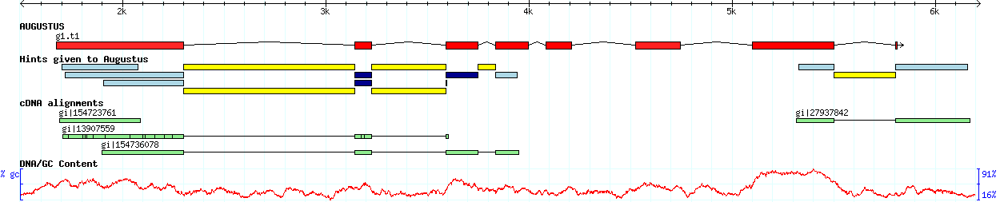
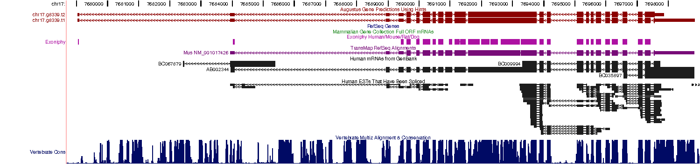
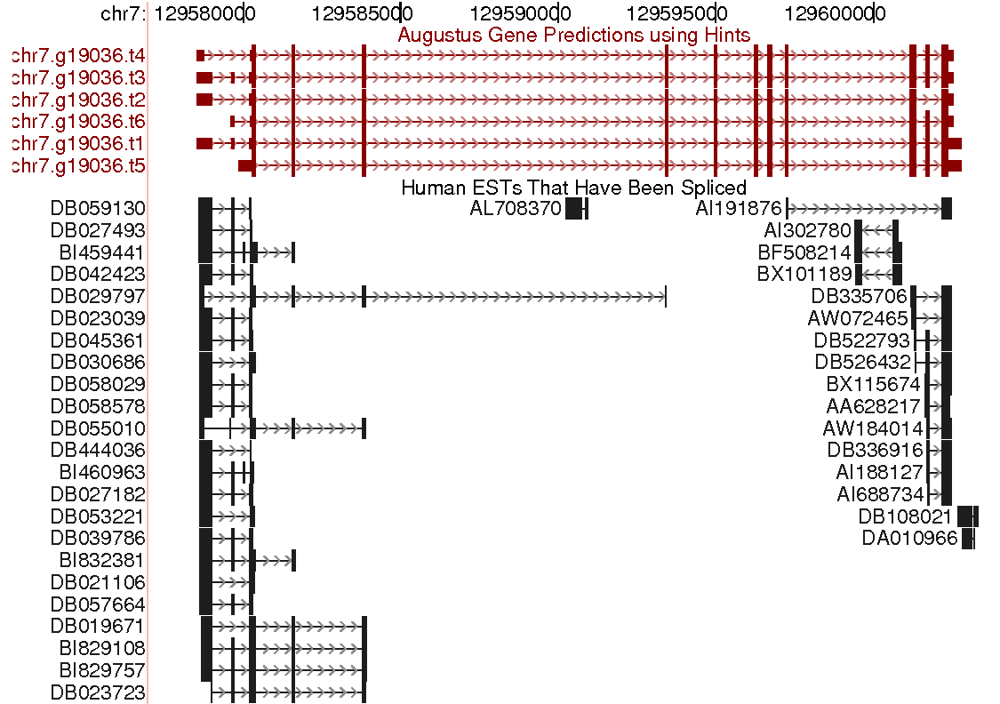

AUGUSTUS is a program that predicts genes in eukaryotic genomic sequences. It can be run with pre-trained parameters on this web server or be downloaded and run locally. It is open source so you can compile it for your computing platform. You can also run AUGUSTUS on the German MediGRID. This enables you to submit larger sequence files and allows to use protein homology information in the prediction. The MediGRID requires an instant easy registration by email for first-time users.
The AUGUSTUS training web server application automatically generates training gene sets from genomic sequence(s) and a set of Proteins or ESTs and subsequently trains AUGUSTUS parameters for a new species, and runs gene predictions with the new parameters and the supplied extrinsic evidence. Alternatively, you can also download the autoAug.pl pipeline and execute our training and prediction pipeline locally.
Features
Gene prediction with AUGUSTUS
- AUGUSTUS now has a protein profile extension (PPX) which allows to use protein family specific conservation in order to identify members and their exon-intron structure of a protein family given by a block profile. The block profile can be constructed with accompanying scripts from a multiple protein sequence alignment. For more details please refer to the README.TXT.
- The download version of AUGUSTUS can incorporate data from RNA-Seq (short cDNA reads, single or paired-end, e.g. from Illumina or SOLiD) as documented here (January 8, 2012).
- If you use the old AUGUSTUS web server application, the results can be displayed automatically in the genome browser Gbrowse. You can browse the gene predictions together with the input sequence, the constraints and the cDNA alignments. Gbrowse also enables you to simultaneously display your own annotation and to export the image in scalable vector graphics format
- You can upload cDNA sequences together with the genomic DNA. Your ESTs or mRNA will be used to improve the gene prediction.

Click on image to enlarge!
- AUGUSTUS ususally belongs to the most accurate programs for the species it is trained
for. Often it is the most accurate ab initio program. For example, at the independent gene finder
assessment (EGASP) on the human ENCODE regions AUGUSTUS was the most accurate gene finder among the
tested ab initio programs. At the more recent nGASP (worm), it was among the best in the ab initio
and transcript-based categories. See accuracy statistics for further statics.
- AUGUSTUS can be used ab initio and has a flexible mechanism for incorporating extrinsic
information, e.g. from EST alignments and protein alignments. Here is an example from the UCSC
Genome Browser where the AUGUSTUS prediction incorporates mRNA alignments, EST alignments,
conservation and other sources of information:

Click on image to enlarge!
- AUGUSTUS can predict alternative splicing and alternative transcripts. It can do this for example
when the EST alignments suggest alternative splicing like in this example:

Click on image to enlarge!
- AUGUSTUS can predict the 5'UTR and 3'UTR including introns. This is in particular helpful when
using EST alignments as the majority of ESTs aligns in the untranslated regions (example).
This feature is currently only trained for human, the red algae Galdieria sulphuraria, Caenorhabditis elegans,
Toxoplasma gondii, Chlamydomonas reinhardtii, pea aphid, Culex pipens (3'UTR only), butterfly, Bombus terrestris/impatiens, chlorella,
elephant shark, honeybee, Leishmania tarentolae, maize, rhodius, tomato, trichinella.
- AUGUSTUS can report a large number of alternative genes, including probabilities for the
transcripts and each exon and intron. You can make AUGUSTUS predict suboptimal gene structures (example) and you can adjust command line paramters to regulate
the number of reported alternatives.
Training AUGUSTUS
- AUGUSTUS is retrainable. It comes with a training program that estimates the parameters given a training set of known genes. It also comes with an optimization script that tries to find values for the meta parameters, like splice window sizes, that optimize the prediction accuracy. The training program is also available through a web interface.
Parameters are already available for the following species:
AUGUSTUS has currently been trained on species specific training sets to predict genes in the
following species. Note that for closely related species usually only one version is necessary. For
example, the human version is good for all mammals.
Contributions.
| animals: |
alveolata: |
plants and algae: |
fungi: |
Acyrthosiphon pisum
Aedes aegypti
Amphimedon queenslandica
Apis mellifera
Brugia malayi
Caenorhabditis elegans
Callorhinchus milii
Culex pipiens
Drosophila melagonaster
Homo sapiens
Nasonia vitripennis
Petromyzon marinus
Schistosoma mansoni
Tribolium castaneum
|
Tetrahymena thermophila
Toxoplasma gondii
|
Arabidopsis thaliana
Chlamydomonas reinhardtii
Galdieria sulphuraria
(Nicotiana tabacum)
Solanum lycopersicum
Zea mays
|
Aspergillus fumigatus
Aspergillus nidulans
Aspergillus oryzae
Aspergillus terreus
Botrytis cinerea
Candida albicans
Candida guilliermondii
Candida tropicalis
Chaetomium globosum
Coccidioides immitis
Coprinus cinereus
Cryptococcus neoformans
Debaryomyces hansenii
Encephalitozoon cuniculi
Eremothecium gossypii
Fusarium graminearum
Histoplasma capsulatum
Kluyveromyces lactis
Laccaria bicolor
Lodderomyces elongisporus
Magnaporthe grisea
Neurospora crassa
Phanerochaete chrysosporium
Pichia stipitis
Rhizopus oryzae
Pneumocystis jirovecii
Saccharomyces cerevisiae
Schizosaccharomyces pombe
Ustilago maydis
Verticillium longisporum
Yarrowia lipolytica
|
Examples of AUGUSTUS predictions can be viewed at at various genome browsers:
UCSC Genome Browser,
Wormbase:
Caenorhabditis elegans,
C. briggsae,
C. remanei,
Brugia malayi
Phytozome:
Chlamydomonas reinhardtii
Flybase:
Drosphila melanogaster
Genboree Browser:
Tribolium castaneum
{kind=link}
{kind=link}
{kind=link}
{kind=link}